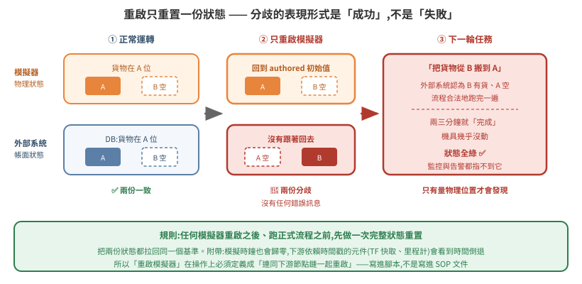
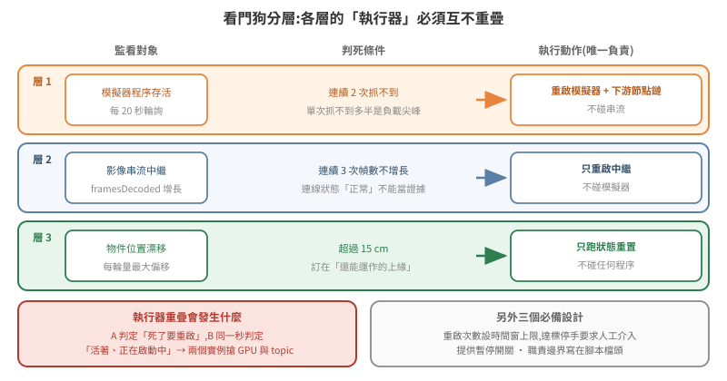

長跑維運:狀態分歧、看門狗分層與靜默失敗
把模擬跑起來,和讓它連續跑一整天不出事,是兩件不同的工程。前者的失敗是明顯的(崩潰、錯誤訊息、畫面全黑),後者的失敗多半是靜默的——系統看起來一切正常,只是做的事情不對。
本篇記錄的都是「第二次遇到才發現自己第一次就該記下來」的東西:重啟造成的兩份狀態分歧、看門狗互相打架、串流凍在最後一幀,以及三個吃掉最多時間的環境陷阱。
官方規格:Identifiers for WebRTC's Statistics API(W3C)。
本篇延伸閱讀:06 篇(WebRTC 單 client 限制與 relay 分流)、09 篇 §9(reset 到底重置了什麼)、11 篇(漂移量測)。
1. 根本問題:狀態不只存在於模擬器裡
一個接進外部系統的模擬,至少有兩份狀態:
- 模擬器持有的物理狀態 —— 東西實際在哪;
- 外部系統持有的帳面狀態 —— 資料庫認為東西在哪。
正常運轉時兩者靠事件同步。但重啟只會重置其中一份。
模擬器重啟後,場景回到 authored 初始狀態:所有被搬物回原位。外部系統的帳面沒有跟著回去——它還記著「這個位置是空的、那個位置有貨」。

症狀非常有欺騙性:下一輪任務兩三分鐘就「完成」了,機具幾乎沒動。因為外部系統認為要搬的東西已經在目的地,整條流程合法地空轉一遍,狀態全綠、沒有任何錯誤。
這種失敗難抓的原因是:分歧的表現形式是「成功」,不是「失敗」。 監控、告警、狀態碼全都指不到它,只有實際看畫面或量物理位置才會發現。
規則:任何模擬器重啟之後、跑正式流程之前,先做一次完整狀態重置(把兩邊都拉回同一個基準)。 不要只重啟模擬器就接著跑。
附帶效應:模擬時鐘歸零
重啟模擬器後,模擬時鐘從 0 開始。下游任何依賴時間戳的元件(TF 快取、里程計、狀態機)都會看到時間倒退,典型症狀是 TF_OLD_DATA 洗版,而下游節點本身沒有崩潰、看起來還活著。
所以「重啟模擬器」在操作上必須定義成「連同下游節點鏈一起重啟」,不能只重啟模擬器本身。把這件事寫進重啟腳本,而不是寫進 SOP 文件——寫進文件的步驟遲早會被跳過。
2. 看門狗:分層,而且職責邊界要寫在檔頭
系統跑久了會不知不覺長出好幾隻看門狗:一隻盯模擬器、一隻盯串流、一隻盯資料。它們互相打架的方式很難查——A 判定服務死了要重啟,B 在同一秒判定它活著且正在啟動中,於是兩個實例同時搶 GPU 和同一組 ROS topic。
可行的做法是分層,每層的執行器不重疊:

| 層 | 監看對象 | 執行動作 | 不做 |
|---|---|---|---|
| 1 | 模擬器程序存活 | 重啟模擬器 + 下游節點鏈 | 不碰串流 |
| 2 | 影像串流中繼 | 只重啟中繼 | 不碰模擬器 |
| 3 | 狀態漂移(見 11 篇 §9) | 只跑狀態重置 | 不碰任何程序 |
四個必備設計,每一個都對應一次實際踩過的坑:
- 判死用連續 N 次抓不到,不是單次 —— 單次抓不到多半是負載尖峰,不是死亡。
- 重啟次數設時間窗上限,達上限停手要求人工介入。無限重啟會把「一次可修的故障」變成「整夜的 GPU 空轉」。
- 提供暫停開關(一個檔案就夠),手動維護前先按 —— 否則你在手動重啟時,看門狗也在重啟,兩個實例搶資源。
- 職責邊界寫在腳本檔頭 —— 三個月後回來看的人包括你自己。
上限值要留餘裕。我們一開始設「每小時 3 次」,結果做 A/B 測試時被自己的看門狗鎖住,還誤以為是別的問題。調試期的重啟頻率本來就會高於正常運轉,把上限訂在正常運轉的經驗值會反過來妨礙你除錯。
3. 靜默失敗:串流凍在最後一幀
WebRTC 連線中斷後,瀏覽器端的畫面會凍在最後一幀,而連線狀態可能還顯示正常。觀眾看到的是一張靜止的圖,不是錯誤訊息——展示現場最糟的失敗模式,因為沒有人會發現。
不能等它報錯,要主動偵測。可用的活性訊號是 getStats() 裡的 framesDecoded,W3C 的定義(逐字)是:
It represents the total number of frames correctly decoded for this RTP stream, i.e., frames that would be displayed if no frames are dropped.
「correctly decoded」正是我們要的語意——它不是收到多少封包,而是真的解出了多少可顯示的畫面。連續 N 次沒有增長就判定卡住,主動重建連線。
(同一份規格裡的 framesPerSecond、framesRendered、framesDropped 也可用;framesDecoded 的好處是單調遞增,做差分最單純。以上欄位規格明訂 audio 不得存在,取值時要先過濾 kind === 'video'。)
// 3 秒輪詢一次,連續 3 次 framesDecoded 沒增長 → 重建連線
// 實測:12 秒偵測 + 40 秒恢復
const stats = await conn.getStats()
let frames = 0
stats.forEach(r => { if (r.type === 'inbound-rtp' && r.kind === 'video') frames = r.framesDecoded })
if (frames === lastFrames) { stalled += 1 } else { stalled = 0; lastFrames = frames }
if (stalled >= 3) restart()
通則:凡是「靜默降級」比「明確失敗」更常見的元件,都要自己造一個活性訊號。 連線狀態正常、程序還活著、日誌沒有 ERROR —— 這三個都不足以證明它在工作。
同一個原則適用於串流品質退化:長跑幾小時後畫面幀率可能悄悄從 60 fps 掉到個位數,而所有狀態指標仍然正常。定期重啟中繼比事後排查便宜得多。
4. 三個重複踩到的環境陷阱
這一節不談模擬,談的是圍繞它的殼層腳本。這些錯誤的共同點是錯誤訊息完全指不到真正的原因。
對著舊 log 下判斷(踩了五次)
同一個服務可能由手動、看門狗、自癒腳本三個來源啟動,各自寫不同檔名的 log。你啟動時指定的那個檔案,常常早就被別人取代,內容停在幾分鐘前——而你正對著它推理當下的行為。
解法是不要猜檔名,從程序反查它的 stdout 實際寫到哪:
pid=$(pgrep -f '<pattern>' | head -1)
readlink -f /proc/$pid/fd/1 # 這個程序的 stdout 真正指向哪個檔案
把它包成一支 logs.sh,規定所有人(包括自動化腳本)只透過它看 log。這比「記得檢查檔案時間戳」可靠,因為前者是機制,後者是紀律。
pkill -f 匹配到自己(踩了六次,每次都斷線)
pkill -f isaac 會匹配到你自己這行 ssh 指令,於是把自己殺掉(exit 255)。
常見的規避寫法是括號 pkill -f '[i]saac'——但它只在指令列裡沒有出現該字串時才有效。如果同一行還寫了 /path/to/isaac_watchdog.sh,照樣自匹配,而且看起來像是「括號寫法失效了」。
解法:把 kill 動作和含有該路徑的動作拆到不同次執行。 這比想一個更聰明的正規表示式可靠——你對抗的是「指令列本身也是被搜尋的文本」這個事實,不是某個特定字串。
zsh 不對未加引號的變數斷詞
這是 zsh 與 bash 最容易踩到的核心差異:
ARGS="--param-a 1 --param-b 2"
some_command $ARGS # bash:展開成四個參數
# zsh :整串當成「一個」參數
在 zsh 下,下游程式會收到一個內含空白的巨大參數值,以型別錯誤啟動失敗——而錯誤訊息指向參數解析,完全指不到這裡。
需要斷詞就用 eval,或改用陣列 ARGS=(--param-a 1) 搭配 "${ARGS[@]}"(後者更安全)。若專案裡的啟動腳本混用 bash 與 zsh,這個差異遲早會咬人。
5. 一條方法論教訓
做 A/B 測試之前,先確認自己沒有在同一時間改動別的東西。
我們曾在「自己的診斷腳本已經把模擬弄壞了」的狀態下(就是 11 篇 §3 那個 simulation view 失效事故),去測兩個啟動旗標對機構動作的影響。結論是「這兩個旗標會讓機構失效」——冤枉了寫那段程式的同事。重測四種組合才平反:四種組合全部正常。
症狀相同不代表原因相同。 尤其當你手上同時有好幾個變因,而其中一個是你自己剛加上去的。
單變因、可重跑、有對照組——這三件事在模擬環境裡比在一般軟體裡更重要,因為模擬器的失敗大多是靜默的:沒有 stack trace 指給你看,你只能靠實驗設計把可能性一個一個排掉。而只要實驗設計裡混進了未知變因,排掉的就不是可能性,是你自己的時間。
6. 長跑檢查清單
重啟
- [ ] 重啟模擬器 = 連同下游節點鏈一起重啟(寫進腳本,不是寫進文件)
- [ ] 重啟後、跑正式流程前,先做一次完整狀態重置
- [ ] 重置流程結尾重新套用執行期物理設定(見 10 篇 §4)
看門狗
- [ ] 判死用連續 N 次
- [ ] 重啟次數有時間窗上限,達標停手
- [ ] 有暫停開關,手動維護前先按
- [ ] 同一個資源只由一層負責重啟,邊界寫在檔頭
- [ ] 上限值對調試期也夠用
靜默失敗
- [ ] 串流有基於
framesDecoded的卡死偵測 - [ ] 每個關鍵元件都有一個「真的在工作」的活性訊號,而不只是「還活著」
- [ ] 診斷指令找不到目標時明確印出,不安靜跳過
殼層
- [ ] 看 log 一律從
/proc/<pid>/fd/1反查,不猜檔名 - [ ] kill 動作與含目標路徑的動作分開執行
- [ ] 確認腳本實際由哪個 shell 執行,變數斷詞行為已驗證